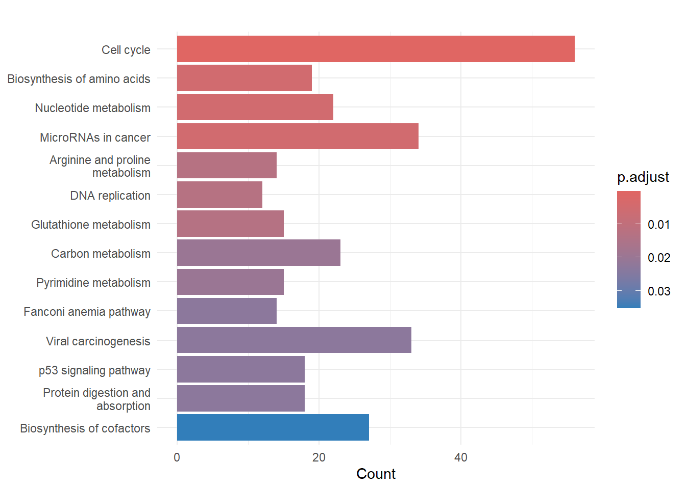
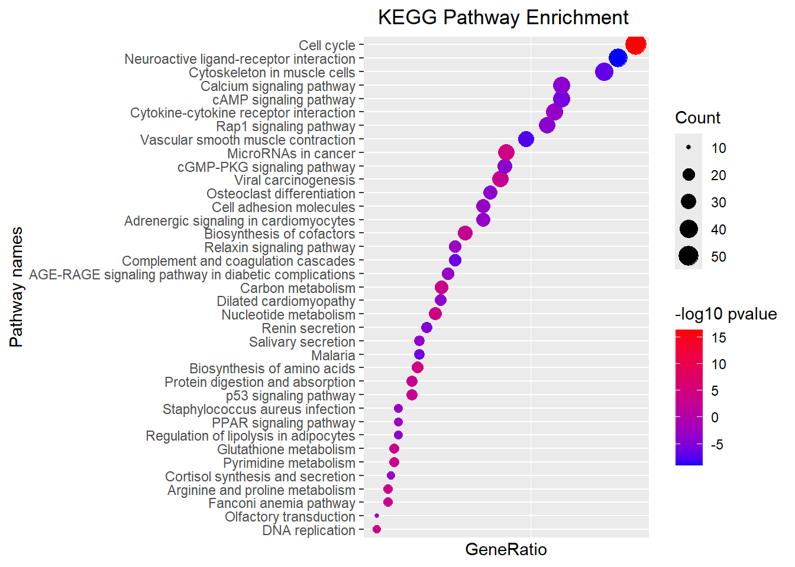

Code
# BiocManager::install('clusterProfiler')
# BiocManager::install("org.Hs.eg.db")
DEG <- read_csv("data/resOrdered.csv")
x <- na.omit(DEG) 基因本体论 （Gene Ontology，GO） 或京都基因与基因组百科全书 （Kyoto Encyclopedia of Genes and Genomes，KEGG）。clusterProfiler
# BiocManager::install('clusterProfiler')
# BiocManager::install("org.Hs.eg.db")
DEG <- read_csv("data/resOrdered.csv")
x <- na.omit(DEG) 对于有参考基因组物种的分析，可以在相关软件包中直接加载该物种的背景基因集。对于常见的模式物种，例如BiocManager::install("org.Hs.eg.db") ，安装人类hg19的注释包 BiocManager::install("org.Mm.eg.db") ，安装小鼠的注释包
| gene | log2FoldChange | padj |
|---|---|---|
| MGAT3 | -4.320512 | 0 |
| RTKN2 | -4.640581 | 0 |
| GPM6A | -5.145913 | 0 |
| SERTM1 | -6.886846 | 0 |
| LIMS2 | -2.660491 | 0 |
| EMP2 | -2.672054 | 0 |
deg_df$expression <- factor(
ifelse( deg_df$padj< 0.05 & abs(deg_df$log2FoldChange) >= 1,
if_else( deg_df$log2FoldChange >= 1 , 'up', 'down' ),
'NS'),
levels = c("up","down","NS"))
table(deg_df$expression)
#>
#> up down NS
#> 2075 1641 15356
gtf_v22_transcripts <- read_delim("data/gencode.v22.annotation.gene.probeMap")
# 之前差异分析可以保留ENSEMBL标识符
deg_df <- deg_df |>
inner_join(gtf_v22_transcripts, by = c( "gene"= "gene"))
# 移除ENSEMBL版本号
deg_df$ENSEMBL <- str_sub(deg_df$id, start = 1, end = 15)R 语言中 AnnotationDbi 包提供的一个函数名bitr() 代表 “Biological Identifier Translation”，即生物学标识符转换。这个函数用于在不同的基因标识符之间进行转换，例如从基因的 Ensembl ID 转换为 Entrez ID（特定基因产物）)、基因符号（symbol）或基因名称（gene name）。
Entrez是National Center for Biotechnology Information (NCBI) 提供的一个综合性生物信息数据库查询系统。它允许用户搜索和检索包括基因、蛋白质、核酸序列、3D蛋白质结构、基因表达数据、基因组数据、遗传多态性、生物项目、生物文献等各种生物医学信息。Entrez Gene数据库中的基因ID是唯一的数字标识符，用于在NCBI的Entrez系统内标识特定的基因。
conflicts_prefer(IRanges::setdiff)
library(clusterProfiler)
library(org.Hs.eg.db)
AnnotationDbi::keytypes(org.Hs.eg.db)
#> [1] "ACCNUM" "ALIAS" "ENSEMBL" "ENSEMBLPROT" "ENSEMBLTRANS"
#> [6] "ENTREZID" "ENZYME" "EVIDENCE" "EVIDENCEALL" "GENENAME"
#> [11] "GENETYPE" "GO" "GOALL" "IPI" "MAP"
#> [16] "OMIM" "ONTOLOGY" "ONTOLOGYALL" "PATH" "PFAM"
#> [21] "PMID" "PROSITE" "REFSEQ" "SYMBOL" "UCSCKG"
#> [26] "UNIPROT"
head(keys(org.Hs.eg.db, "ENSEMBL"))
#> [1] "ENSG00000121410" "ENSG00000175899" "ENSG00000291190" "ENSG00000171428"
#> [5] "ENSG00000156006" "ENSG00000196136"
head(keys(org.Hs.eg.db, "ENTREZID"))
#> [1] "1" "2" "3" "9" "10" "11"
head(keys(org.Hs.eg.db, "SYMBOL")) #基因名称缩写
#> [1] "A1BG" "A2M" "A2MP1" "NAT1" "NAT2" "NATP"
head(keys(org.Hs.eg.db, "GENENAME")) # 基因名称全称
#> [1] "alpha-1-B glycoprotein" "alpha-2-macroglobulin"
#> [3] "alpha-2-macroglobulin pseudogene 1" "N-acetyltransferase 1"
#> [5] "N-acetyltransferase 2" "N-acetyltransferase pseudogene"
valid_ensembl <- deg_df$ENSEMBL %in% keys(org.Hs.eg.db, "ENSEMBL")
table(valid_ensembl)
#> valid_ensembl
#> FALSE TRUE
#> 2251 16906
valid_symbol <- deg_df$gene %in% keys(org.Hs.eg.db, "SYMBOL")
table(valid_symbol)
#> valid_symbol
#> FALSE TRUE
#> 3231 15926
deg_df_filtered <- deg_df[valid_ensembl, ]
# Biological Identifier Translation
df <- bitr(
geneID= deg_df_filtered$ENSEMBL,
fromType = "ENSEMBL",
toType = c( "ENTREZID","SYMBOL","GENENAME" ),
OrgDb = org.Hs.eg.db )
head(df)| ENSEMBL | ENTREZID | SYMBOL | GENENAME |
|---|---|---|---|
| ENSG00000128268 | 4248 | MGAT3 | beta-1,4-mannosyl-glycoprotein 4-beta-N-acetylglucosaminyltransferase |
| ENSG00000182010 | 219790 | RTKN2 | rhotekin 2 |
| ENSG00000150625 | 2823 | GPM6A | glycoprotein M6A |
| ENSG00000180440 | 400120 | SERTM1 | serine rich and transmembrane domain containing 1 |
| ENSG00000072163 | 55679 | LIMS2 | LIM zinc finger domain containing 2 |
| ENSG00000213853 | 2013 | EMP2 | epithelial membrane protein 2 |
deg_df <- inner_join(deg_df_filtered, df, by='ENSEMBL' )进行上调和下调基因的分离是为了更精确地识别与特定生物学过程或疾病状态相关的途径。例如，某些途径可能在疾病发生时被激活，导致相关基因上调，而其他途径可能被抑制，导致相关基因下调。
gene_up <- deg_df[ deg_df$expression == 'up', "ENTREZID" ]
gene_down <- deg_df[ deg_df$expression == 'down', "ENTREZID"]
gene_all <- deg_df[ ,"ENTREZID"]
library(biomaRt)
# 使用biomaRt映射基因ID
gene_info <- getBM(attributes = c("hgnc_symbol", "entrezgene_id"),
filters = "entrezgene_id",
values = gene_up$ENTREZID,
mart = useMart("ensembl", dataset = "hsapiens_gene_ensembl"))kegg_up <- clusterProfiler::enrichKEGG(gene = gene_up$ENTREZID ,# entrez gene id
organism= 'hsa',
keyType = "kegg",
pvalueCutoff = 0.05,
pAdjustMethod = "BH", # FDR多重假设检验校正 qvalue
universe= gene_all$ENTREZID,
minGSSize = 10,
maxGSSize = 500,
qvalueCutoff = 0.05 )
kegg_down <- clusterProfiler::enrichKEGG(gene = gene_down$ENTREZID ,
organism= 'hsa',
keyType = "kegg",
pvalueCutoff = 0.05,
pAdjustMethod = "BH",
universe= gene_all$ENTREZID,
qvalueCutoff = 0.05 )df_up<- as.data.frame(kegg_up)
df_down<- as.data.frame(kegg_down)
df_up| category | subcategory | ID | Description | GeneRatio | BgRatio | pvalue | p.adjust | qvalue | geneID | Count | |
|---|---|---|---|---|---|---|---|---|---|---|---|
| hsa04110 | Cellular Processes | Cell growth and death | hsa04110 | Cell cycle | 56/763 | 154/6908 | 0.0000000 | 0.0000000 | 0.0000000 | 5347/898/990/701/113130/991/151648/9232/9212/9133/891/995/9088/23594/7272/890/4998/9700/57082/1111/10403/157570/8318/4171/1029/80174/699/4173/90381/4175/4085/81620/1870/983/9134/11200/27085/993/3065/4176/1871/5111/5001/10926/9319/5933/7157/26271/10459/1875/5591/1019/1869/8317/1663/4193 | 56 |
| hsa01230 | Metabolism | Global and overview maps | hsa01230 | Biosynthesis of amino acids | 19/763 | 64/6908 | 0.0000370 | 0.0047433 | 0.0044399 | 5831/84706/5832/6472/29968/2597/5214/2023/3418/5091/1373/10993/7167/6888/226/3417/440/4143/384 | 19 |
| hsa01232 | Metabolism | Global and overview maps | hsa01232 | Nucleotide metabolism | 22/763 | 81/6908 | 0.0000426 | 0.0047433 | 0.0044399 | 205/6241/978/7083/377841/7298/4830/7498/100/4907/124583/4833/122622/4831/272/3251/56953/1841/9615/7371/5167/954 | 22 |
| hsa05206 | Human Diseases | Cancer: overview | hsa05206 | MicroRNAs in cancer | 34/763 | 155/6908 | 0.0000579 | 0.0048334 | 0.0045242 | 898/113130/1591/995/1945/2146/5268/1944/1029/9493/8091/1870/5328/9134/7473/1789/1946/672/4318/993/6659/3065/1871/6464/7157/90427/6768/3845/3925/1869/54541/4193/6624/2065 | 34 |
| hsa00330 | Metabolism | Amino acid metabolism | hsa00330 | Arginine and proline metabolism | 14/763 | 45/6908 | 0.0002244 | 0.0126069 | 0.0118003 | 5831/79814/548596/5832/26/1159/283208/6723/54498/6611/2628/219/384/2593 | 14 |
| hsa03030 | Genetic Information Processing | Replication and repair | hsa03030 | DNA replication | 12/763 | 35/6908 | 0.0002265 | 0.0126069 | 0.0118003 | 1763/4171/4173/2237/5427/4175/5984/5558/10535/4176/5111/6119 | 12 |
| hsa00480 | Metabolism | Metabolism of other amino acids | hsa00480 | Glutathione metabolism | 15/763 | 51/6908 | 0.0002704 | 0.0129019 | 0.0120765 | 2877/6241/2729/2936/79017/3418/6723/2730/6611/2539/3417/4257/493869/5226/494143 | 15 |
| hsa01200 | Metabolism | Global and overview maps | hsa01200 | Carbon metabolism | 23/763 | 101/6908 | 0.0005093 | 0.0198466 | 0.0185769 | 84706/6472/29968/2597/5214/2023/2731/3418/5091/1373/10993/2821/7167/6888/2539/80201/226/3417/55753/2653/4199/5226/6389 | 23 |
| hsa00240 | Metabolism | Nucleotide metabolism | hsa00240 | Pyrimidine metabolism | 15/763 | 54/6908 | 0.0005348 | 0.0198466 | 0.0185769 | 6241/978/7083/377841/7298/4830/4907/124583/4833/4831/790/56953/1841/7371/5167 | 15 |
| hsa03460 | Genetic Information Processing | Replication and repair | hsa03460 | Fanconi anemia pathway | 14/763 | 50/6908 | 0.0007456 | 0.0229775 | 0.0215075 | 29089/83990/116028/55215/641/146956/5888/2189/2177/2175/2187/91442/672/6119 | 14 |
| hsa05203 | Human Diseases | Cancer: overview | hsa05203 | Viral carcinogenesis | 33/763 | 171/6908 | 0.0008931 | 0.0229775 | 0.0215075 | 2648/898/991/890/3017/1111/1029/3718/1237/983/9134/7188/440689/3665/2961/3065/5366/8339/7185/5933/7157/1232/148327/8294/85236/5902/3845/7186/1019/8365/4193/8347/7419 | 33 |
| hsa04115 | Cellular Processes | Cell growth and death | hsa04115 | p53 signaling pathway | 18/763 | 74/6908 | 0.0008943 | 0.0229775 | 0.0215075 | 898/9133/891/51512/6241/5268/1111/1029/983/9134/11200/64065/5366/84883/7157/1019/3486/4193 | 18 |
| hsa04974 | Organismal Systems | Digestive system | hsa04974 | Protein digestion and absorption | 18/763 | 74/6908 | 0.0008943 | 0.0229775 | 0.0215075 | 3783/1301/1300/6564/1281/1294/1308/1290/169044/1289/1277/5646/255631/478/1278/1293/1298/1299 | 18 |
| hsa01240 | Metabolism | Global and overview maps | hsa01240 | Biosynthesis of cofactors | 27/763 | 135/6908 | 0.0014764 | 0.0352238 | 0.0329702 | 205/6999/1728/6472/29968/4830/7358/80308/2729/29926/10797/4833/53630/23475/2730/122622/4831/3145/790/23057/1719/219/8942/8836/4143/54578/93100 | 27 |
df_down| category | subcategory | ID | Description | GeneRatio | BgRatio | pvalue | p.adjust | qvalue | geneID | Count | |
|---|---|---|---|---|---|---|---|---|---|---|---|
| hsa04080 | Environmental Information Processing | Signaling molecules and interaction | hsa04080 | Neuroactive ligand-receptor interaction | 44/634 | 181/6908 | 0.0000000 | 0.0000003 | 0.0000002 | 1910/154/7433/10316/1901/10203/1129/2890/148/2900/2358/5028/2922/59350/1268/554/8698/5745/1906/22953/122042/6751/53637/9002/117/185/5734/153/728/146/3953/2894/1908/1132/1128/2357/5179/3355/187/2690/796/2740/8862/147 | 44 |
| hsa04270 | Organismal Systems | Circulatory system | hsa04270 | Vascular smooth muscle contraction | 31/634 | 116/6908 | 0.0000000 | 0.0000043 | 0.0000037 | 10266/10268/255189/10398/2977/10203/196883/50487/148/5581/779/5319/5592/4629/54776/91807/5583/1906/72/4881/10242/108/5588/114/185/146/115/1908/4628/796/147 | 31 |
| hsa04820 | NA | NA | hsa04820 | Cytoskeleton in muscle cells | 42/634 | 198/6908 | 0.0000001 | 0.0000152 | 0.0000132 | 64236/27063/7134/6445/10398/1288/2273/23500/477/171024/88/4629/4620/1285/6442/25802/161176/72/1286/6711/10529/84467/7431/1674/9172/6383/91977/25777/2006/131873/825/7273/8516/58529/56203/8736/4628/7111/29767/7140/4634/23345 | 42 |
| hsa04610 | Organismal Systems | Immune system | hsa04610 | Complement and coagulation cascades | 21/634 | 70/6908 | 0.0000006 | 0.0000478 | 0.0000413 | 5648/7056/7450/11326/732/9002/1361/2157/1604/2159/2160/728/5627/3687/10747/722/717/712/2/1675/713 | 21 |
| hsa05144 | Human Diseases | Infectious disease: parasitic | hsa05144 | Malaria | 16/634 | 46/6908 | 0.0000015 | 0.0000947 | 0.0000818 | 5175/2995/6403/1440/948/3569/2532/3043/7042/3040/6383/7099/3039/3082/3683/3553 | 16 |
| hsa04024 | Environmental Information Processing | Signal transduction | hsa04024 | cAMP signaling pathway | 36/634 | 176/6908 | 0.0000029 | 0.0001489 | 0.0001287 | 154/10398/196883/1129/2890/477/779/338442/11069/64399/627/1906/5140/4881/108/6751/114/10411/8843/117/2353/153/115/51196/1262/64411/1908/6262/5348/4772/1128/3725/5295/3355/5350/2740 | 36 |
| hsa04924 | Organismal Systems | Endocrine system | hsa04924 | Renin secretion | 17/634 | 60/6908 | 0.0000168 | 0.0007524 | 0.0006503 | 154/2977/358/779/5153/1636/5972/1906/5140/4881/117/185/5593/5734/153/1908/5137 | 17 |
| hsa04015 | Environmental Information Processing | Signal transduction | hsa04015 | Rap1 signaling pathway | 34/634 | 185/6908 | 0.0000573 | 0.0022079 | 0.0019083 | 7010/51378/196883/2255/2277/9732/5028/11069/10235/8817/1268/5587/5155/260425/2247/108/114/10411/9002/2324/5590/3791/9771/115/9863/51196/64411/284/9223/3082/3683/2357/5295/2264 | 34 |
| hsa04022 | Environmental Information Processing | Signal transduction | hsa04022 | cGMP-PKG signaling pathway | 28/634 | 141/6908 | 0.0000635 | 0.0022079 | 0.0019083 | 1910/154/10398/2977/196883/148/5581/477/779/5592/91807/5140/4881/5138/10242/108/114/185/5593/153/8654/146/3764/115/23533/4772/5350/147 | 28 |
| hsa04020 | Environmental Information Processing | Signal transduction | hsa04020 | Calcium signaling pathway | 36/634 | 203/6908 | 0.0000760 | 0.0023791 | 0.0020563 | 1910/7134/154/845/196883/1129/2255/2277/148/779/5153/8817/91807/22953/5155/2247/108/114/2324/185/153/3791/146/115/51196/6262/3082/4772/1128/2264/4915/5350/5137/2066/4843/147 | 36 |
| hsa04380 | Organismal Systems | Development and regeneration | hsa04380 | Osteoclast differentiation | 26/634 | 131/6908 | 0.0001163 | 0.0033098 | 0.0028606 | 7048/126014/10326/9846/54/6688/4286/3552/7042/4688/2353/11025/102725035/107987425/107987462/11027/2354/695/4772/3553/3725/3727/5295/3726/5468/79168 | 26 |
| hsa04923 | Organismal Systems | Endocrine system | hsa04923 | Regulation of lipolysis in adipocytes | 13/634 | 46/6908 | 0.0001702 | 0.0044382 | 0.0038360 | 2167/154/196883/5592/5140/4881/108/114/5593/153/115/11343/5295 | 13 |
| hsa04970 | Organismal Systems | Digestive system | hsa04970 | Salivary secretion | 16/634 | 69/6908 | 0.0003930 | 0.0094613 | 0.0081774 | 154/2977/196883/148/477/5592/108/114/683/5593/153/820/146/115/1473/147 | 16 |
| hsa04261 | Organismal Systems | Circulatory system | hsa04261 | Adrenergic signaling in cardiomyocytes | 25/634 | 135/6908 | 0.0004791 | 0.0101699 | 0.0087899 | 7134/154/196883/148/477/779/9254/11069/6330/108/114/10411/185/153/146/115/23533/6262/3753/785/6332/5350/4634/55799/147 | 25 |
| hsa05414 | Human Diseases | Cardiovascular disease | hsa05414 | Dilated cardiomyopathy | 19/634 | 91/6908 | 0.0004874 | 0.0101699 | 0.0087899 | 7134/6445/196883/779/9254/6442/108/7042/1674/114/153/115/7273/8516/6262/785/5350/4634/55799 | 19 |
| hsa04933 | Human Diseases | Endocrine and metabolic disease | hsa04933 | AGE-RAGE signaling pathway in diabetic complications | 20/634 | 99/6908 | 0.0005491 | 0.0107415 | 0.0092839 | 177/7048/1288/2277/5581/7056/3569/1285/1906/1286/3552/7042/5590/185/1958/51196/4772/3553/3725/5295 | 20 |
| hsa04740 | Organismal Systems | Sensory system | hsa04740 | Olfactory transduction | 10/634 | 35/6908 | 0.0008698 | 0.0153375 | 0.0132563 | 408/123041/57101/5153/5592/5138/83988/5593/1262/5137 | 10 |
| hsa04060 | Environmental Information Processing | Signaling molecules and interaction | hsa04060 | Cytokine-cytokine receptor interaction | 35/634 | 221/6908 | 0.0008820 | 0.0153375 | 0.0132563 | 7048/53342/94/6369/1440/55504/3563/3590/3569/2920/51554/6368/3977/653/6358/3552/7042/659/90865/2921/5473/3953/8741/654/9173/1271/3553/650/2662/85480/3575/2690/53832/3577/3579 | 35 |
| hsa04514 | Environmental Information Processing | Signaling molecules and interaction | hsa04514 | Cell adhesion molecules | 25/634 | 143/6908 | 0.0011503 | 0.0189493 | 0.0163779 | 23705/5175/1003/58494/6403/51208/64115/7122/6693/947/90952/5797/94030/3133/23114/83700/6383/6404/84631/8516/3683/22865/3384/4099/257194 | 25 |
| hsa04926 | Organismal Systems | Endocrine system | hsa04926 | Relaxin signaling pathway | 21/634 | 116/6908 | 0.0017827 | 0.0278990 | 0.0241131 | 1910/7048/408/53358/196883/1288/2277/59350/1285/1906/1286/122042/108/114/5590/2353/115/3725/5295/2791/4843 | 21 |
| hsa03320 | Organismal Systems | Endocrine system | hsa03320 | PPAR signaling pathway | 13/634 | 60/6908 | 0.0026028 | 0.0370301 | 0.0320052 | 2167/33/948/4973/4023/10580/6258/1593/2180/2171/79966/5468/28965 | 13 |
| hsa05150 | Human Diseases | Infectious disease: bacterial | hsa05150 | Staphylococcus aureus infection | 13/634 | 60/6908 | 0.0026028 | 0.0370301 | 0.0320052 | 5648/6403/2358/6404/820/728/3683/10747/2357/717/712/1675/713 | 13 |
| hsa04927 | Organismal Systems | Endocrine system | hsa04927 | Cortisol synthesis and secretion | 12/634 | 54/6908 | 0.0030081 | 0.0409367 | 0.0353817 | 196883/779/3949/3739/108/114/185/1586/115/3777/8622/3164 | 12 |
对于各列内容：
ID和Description，富集到的通路和功能描述；
GeneRatio和BgRatio，分别为富集到该通路中的基因数目/给定基因的总数目，以及该通路中背景基因总数目/该物种所有已知的KEGG功能基因数目；
pvalue、p.adjust和qvalue，p值、校正后p值和q值信息；
p值（P-value）：
p值是在一个假设检验中，当零假设（null hypothesis）为真时，观察到的统计量或更极端情况出现的概率。
一个低的p值（如小于0.05）通常表明统计学上的显著性，意味着结果不太可能仅仅是由随机因素引起的。
不太关心假阳性，而是更关注于发现尽可能多的显著性通路，原始的p值可能足够
校正后的p值（Adjusted P-value） - Benjamini-Hochberg (BH)方法：
在进行多重检验时，为了控制第一类错误（错误地拒绝零假设）的总体率，需要对p值进行校正。BH方法是一种流行的校正方法，它通过控制假发现率（false discovery rate, FDR）来进行校正。
BH校正后的p值（padj）是基于原始p值按照一定规则调整后的值，用于评估在多重比较情况下的统计显著性。
平衡假阳性和假阴性的发现，可以使用BH方法的p.adjust值
q值（Q-value）：
q值同样是用于评估多重检验中的统计显著性，它直接控制了假发现率。
q值定义为在最坏的情况下，所接受的假设中错误发现的比例。例如，q=0.05意味着在所有被认为是显著的发现中，最多有5%实际上是假阳性。
更保守地挑选显著性通路，以减少假阳性的可能性，可能会选择使用q值
R中使用”BY”表示q值校正
geneID和Count，富集到该通路中的基因名称和数目。
df_up <- df_up[df_up$pvalue < 0.05, ]
df_down <- df_down[df_down$pvalue < 0.05, ]
lubridate::intersect(df_up$ID,df_down$ID)
#> character(0)df_up$group <- 1
df_down$group <- -1| category | subcategory | ID | Description | GeneRatio | BgRatio | pvalue | p.adjust | qvalue | geneID | Count | group | |
|---|---|---|---|---|---|---|---|---|---|---|---|---|
| hsa04110 | Cellular Processes | Cell growth and death | hsa04110 | Cell cycle | 56/763 | 154/6908 | 0.0000000 | 0.0000000 | 0.0000000 | 5347/898/990/701/113130/991/151648/9232/9212/9133/891/995/9088/23594/7272/890/4998/9700/57082/1111/10403/157570/8318/4171/1029/80174/699/4173/90381/4175/4085/81620/1870/983/9134/11200/27085/993/3065/4176/1871/5111/5001/10926/9319/5933/7157/26271/10459/1875/5591/1019/1869/8317/1663/4193 | 56 | 1 |
| hsa01230 | Metabolism | Global and overview maps | hsa01230 | Biosynthesis of amino acids | 19/763 | 64/6908 | 0.0000370 | 0.0047433 | 0.0044399 | 5831/84706/5832/6472/29968/2597/5214/2023/3418/5091/1373/10993/7167/6888/226/3417/440/4143/384 | 19 | 1 |
| hsa01232 | Metabolism | Global and overview maps | hsa01232 | Nucleotide metabolism | 22/763 | 81/6908 | 0.0000426 | 0.0047433 | 0.0044399 | 205/6241/978/7083/377841/7298/4830/7498/100/4907/124583/4833/122622/4831/272/3251/56953/1841/9615/7371/5167/954 | 22 | 1 |
| hsa05206 | Human Diseases | Cancer: overview | hsa05206 | MicroRNAs in cancer | 34/763 | 155/6908 | 0.0000579 | 0.0048334 | 0.0045242 | 898/113130/1591/995/1945/2146/5268/1944/1029/9493/8091/1870/5328/9134/7473/1789/1946/672/4318/993/6659/3065/1871/6464/7157/90427/6768/3845/3925/1869/54541/4193/6624/2065 | 34 | 1 |
| hsa00330 | Metabolism | Amino acid metabolism | hsa00330 | Arginine and proline metabolism | 14/763 | 45/6908 | 0.0002244 | 0.0126069 | 0.0118003 | 5831/79814/548596/5832/26/1159/283208/6723/54498/6611/2628/219/384/2593 | 14 | 1 |
| hsa03030 | Genetic Information Processing | Replication and repair | hsa03030 | DNA replication | 12/763 | 35/6908 | 0.0002265 | 0.0126069 | 0.0118003 | 1763/4171/4173/2237/5427/4175/5984/5558/10535/4176/5111/6119 | 12 | 1 |
barplot(kegg_up, showCategory=20, xlab="-log10(pvalue)", ylab="Pathways") +
theme_minimal()
dotplot(kegg_up)
up_down$Negative_log10pvalue <- -log10(up_down$pvalue)
up_down$Grouped_Negativelog10pvalue <- up_down$Negative_log10pvalue * up_down$group
up_down <- up_down[order( up_down$Grouped_Negativelog10pvalue), ]
ggplot(up_down, aes(
x = reorder(Description, order(Grouped_Negativelog10pvalue, decreasing = F)),
y = Grouped_Negativelog10pvalue,
fill = group
)) +
geom_bar(stat = "identity") +
coord_flip()+
scale_fill_gradient(low = "blue", high = "red") +
scale_x_discrete(name = "Pathway names") +
scale_y_continuous(name = "-log10 pvalue")+
theme(plot.title = element_text(hjust = 0.5) ) +
ggtitle("KEGG Pathway Enrichment") 
# GeneRatio 转化成数值型
GR <- up_down$GeneRatio |>
str_split(pattern = "/",simplify = TRUE) |> as_tibble(.name_repair="unique")
up_down$GeneRatio <- parse_number(GR$...1)/parse_number(GR$...2)
up_down <- up_down[order(up_down$GeneRatio),]
ggplot(data = up_down,aes(x=GeneRatio,
y=reorder(Description,order(GeneRatio)),
color = Grouped_Negativelog10pvalue,
size=Count
)
)+
geom_point()+
scale_x_continuous( name = "GeneRatio" ,breaks = seq(0,1.0,0.1))+
scale_color_gradient(low = "blue", high = "red" )+
scale_y_discrete( name = "Pathway names" ) +
theme( plot.title = element_text( hjust = 0.5 )) +
ggtitle( "KEGG Pathway Enrichment " )+
labs(color="-log10 pvalue")
对于输出的GO富集结果表格中的各列内容：
ONTOLOGY，GO的BP（生物学过程）、CC（细胞组分）或MF（分子功能）；
ID和Description，富集到的GO term及其描述；
GeneRatio和BgRatio，分别为富集到该GO term中的基因数目/给定基因的总数目，以及该GO term中背景基因总数目/该物种所有已知GO功能基因数目；
pvalue、p.adjust和qvalue，p值、校正后p值和q值；
geneID和Count，富集到该GO term中的基因名称和数目。
GO_EA<- clusterProfiler::enrichGO(gene = gene_all$ENTREZID,
OrgDb = "org.Hs.eg.db",
keyType = "ENTREZID",
ont = "ALL",
pvalueCutoff = 0.05 ,
qvalueCutoff = 0.05,
readable = F)
GO_EA_tbl <- as_tibble(GO_EA)dat2 <- GO_EA_tbl[GO_EA_tbl$pvalue< 0.05, ]
dat2$Negative_log10pvalue <- -log10(dat2$pvalue)
dat2 = dat2[order( dat2$Negative_log10pvalue, decreasing = F ), ]
dat2 <- dat2 |>
group_by(ONTOLOGY) |>
slice_max(order_by = Negative_log10pvalue,n=10) |>
ungroup()
ggplot(dat2,aes(x = Negative_log10pvalue,
y = reorder(Description,
order(ONTOLOGY,Negative_log10pvalue,decreasing=F)),
fill = ONTOLOGY ))+
geom_bar( stat = "identity" ) +
scale_x_continuous( name = "-log10 pvalue" ) +
scale_y_discrete( name = "Pathway names" ) +
theme_bw() +
theme( plot.title = element_text( hjust = 0.5 ) ) +
ggtitle( "GO Pathway Enrichment" )